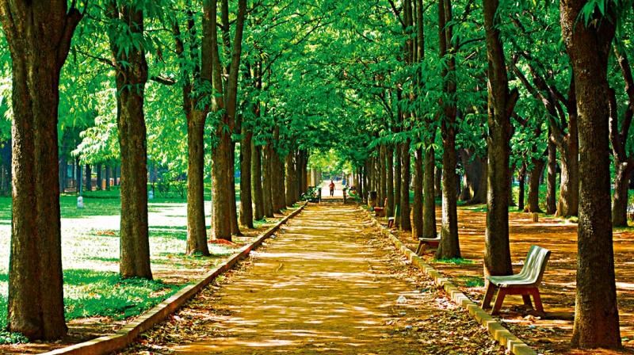
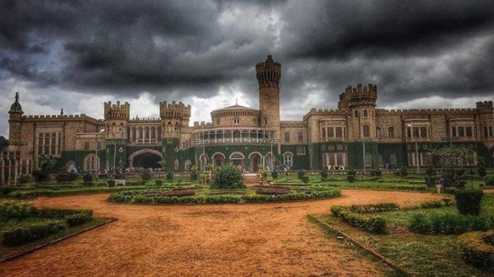

Amongst the plethora of places to visit in Bangalore, Cubbon Park is at the top of the list.
Built by Richard Sankey, the Chief Engineer of Mysore, this delightful park spans an area
of 300 acres. The major attractions of the place are the statues of famous
personalities like Chamarajendra Wodeyar, Queen Victoria, Sir Mark Cubbon, Sri. K. Sheshadri Iyer
and Rajya Dhurandhar. Architecture lovers will witness some beautiful neo-classical buildings
here including the Government Museum, Doll Museum, Cheshire Dyer Memorial Hall and more.
Entry Fee: N/A
Timings: Morning till evening

Fig 1.Inside cubbon park
2) Bangalore Palace
The Bangalore Palace has always been considered as one of the
most striking palaces built in the country and was constructed
by Chamaraja Wodeyar in the 19th century. Built in the Tudor style, this palace
mainly draws inspiration from England’s Windsor Castle and will awe you
with its turrets, vintage furniture, woodcarvings and countless other iconic elements.
Surrounded by 430 acres of mesmerizing gardens, the palace is a hotspot for several
concerts, exhibitions and events now. The elegant interiors will take you deep into
history and give you a glimpse of how the royals lived their magnificent days!
Entry Fee: Rs 230
Timings: 10:00 am to 5:00pm

Fig 2.Bangalore palace
3) Nandi Hills, Chikkaballapur
A lot of people think of fun places to visit in
bangalore with Revv self drive car rental and Nandi Hills
certainly makes the cut! If you’re someone who gets excited
at the prospect of watching a beautiful sunset surrounded by hills and natural
greenery, this is the place for you! Zoom out
in the wee hours of a Saturday morning with your loved ones to reach
Nandi Durg or Nandi Betta as it is also known. Located in the Chikkaballapur District in Karnataka, this
is just 60 kilometres away from Bangalore. It is even a paradise for cyclists because
of the stunning hairpin bends and the lovely trails passing through pristine greenery.